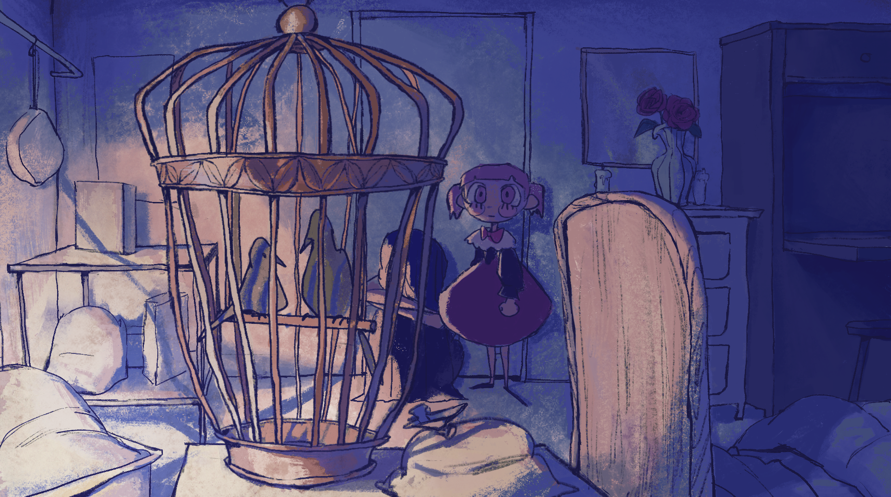
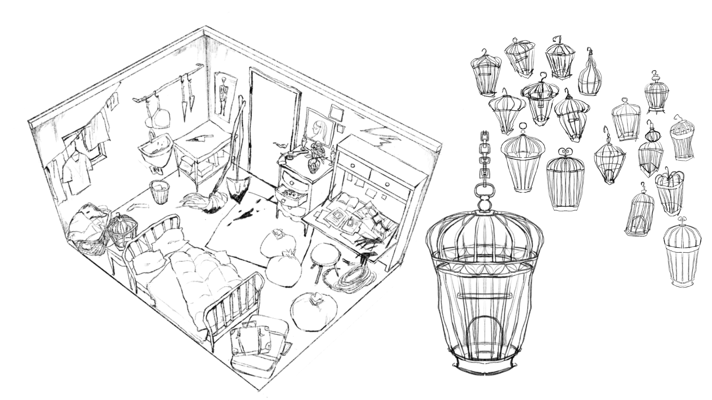
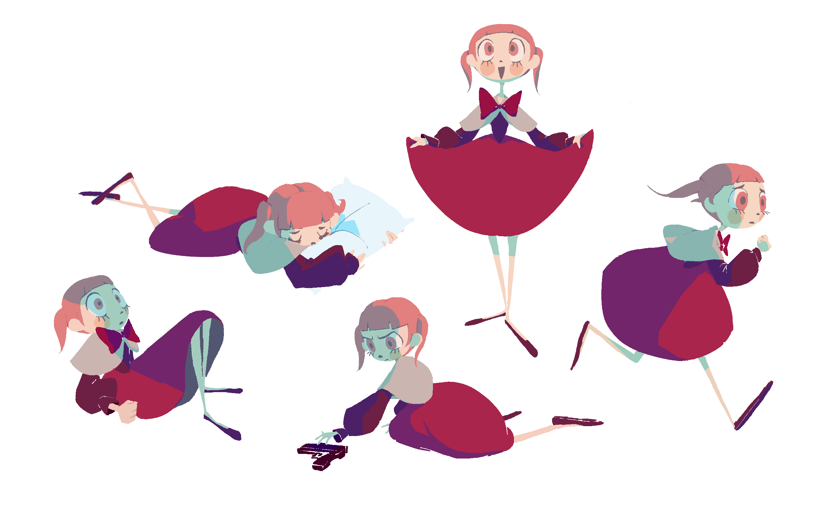
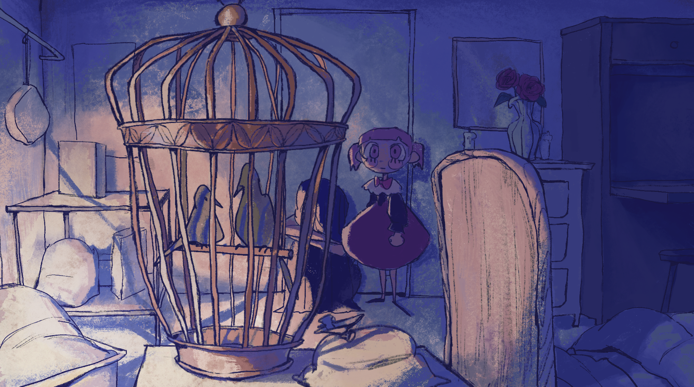
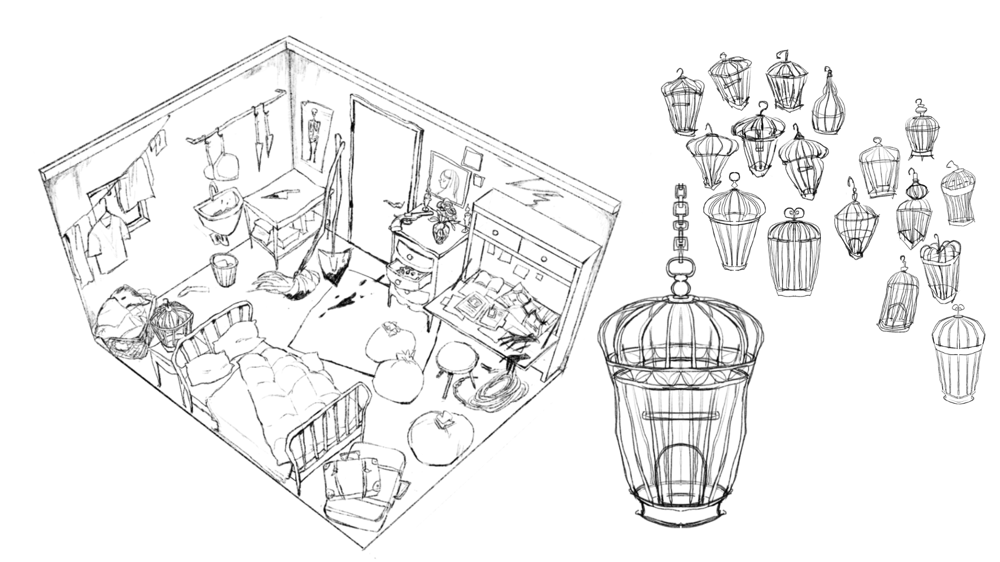
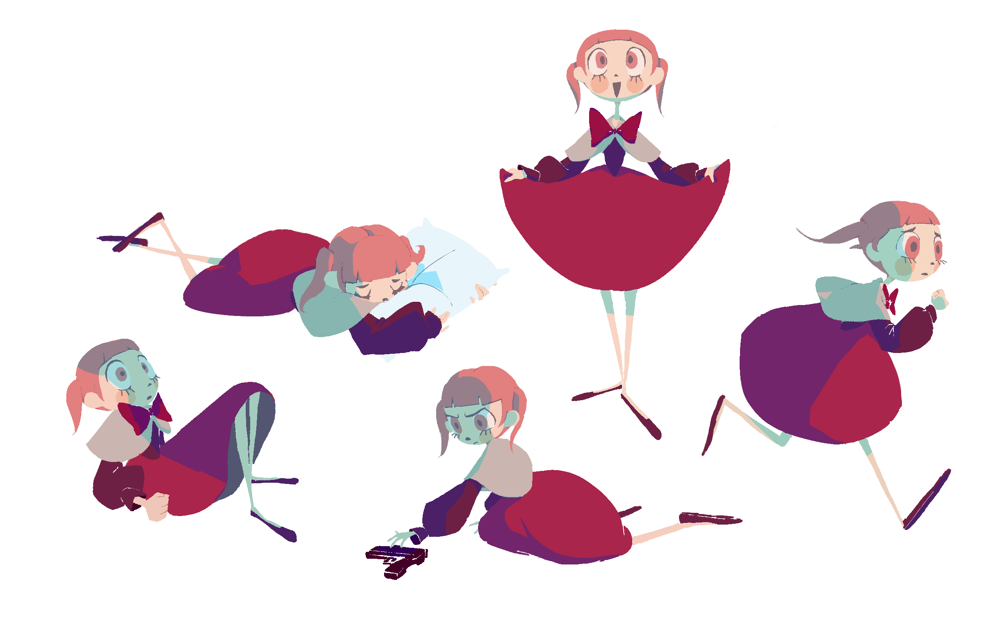

The theme of this film is "obsession". The story is about the protagonist, who has never been given love, who is rescued by a woman and searches for love.
In order to give the screen a softer impression, I used a filter to make the pencil handwriting visible after rendering. I also tried to make the lines change slightly in each frame to express the instability of the story.


First, I imported the character model as a cloth, untied the connected edges, and ran the simulation. The death of a character shot by a gun is indirectly and shockingly depicted through the way the cloth separates and falls.